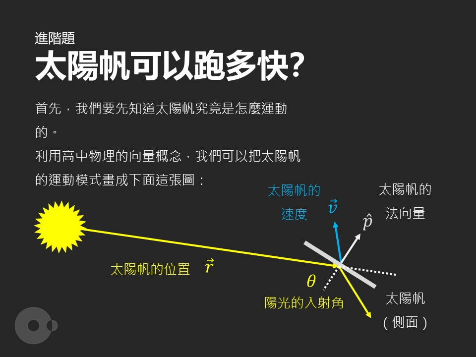

2021 年 4 月，我發了一系列跟太陽帆（solar/light sail）相關的文章作為 EASY 地科小擂台系列的題目。

對於類似概念的東西，最古老的記憶是小學在安親班的百科看到的「光子火箭」。雖然記憶模糊，但卻記得那個它「最可能以光速運行的火箭之類」的描述，算是第一次接觸到光可以做為推力這件事。
後來國高中也陸續看了很多太陽帆相關的介紹。但最近一次在 Launch Pad Astronomy 看到，感覺就跟以前不太一樣。隱隱約約感覺這背後的物理應該並不是這麼困難，於是就動手推了一遍它的運動方程、指向控制之類的東西，還寫了一個小程式做點模擬。之後真的去查太陽帆教科書的時候，發現自己的推導是正確的，那種感覺確實相當不錯。
小擂台這個專欄，大概是粉專所有系列裡面最難的（而且有越來越難的趨勢......）。不僅是解題難，要出一個能夠用高中以下的數學和物理解決，而且還要有趣的問題更難。但在我看來，小擂台這個專欄的核心價值，就是希望透過這些設計過的題目，讓讀者在不需要大學數學基礎的情況下，於搜尋資料與計算的過程中，親自發現隱藏在現象背後的重要觀念。
比如《衛星有多高》中要釐清的是衛星為甚麼可以看得到，以及軌道、地影的相對關係；《太陽帆》中要釐清的是軌道力學的基本原則，以及太陽風並非太陽帆的主要推力；《視超光速現象》要釐清的是光速的有限性，以及其能夠造成的視覺現象......。而這段觀察現象、蒐集資料、計算、疑惑、想通後恍然大悟的過程，正是科學研究的縮影。
小擂台想做到的，正是將這段過程濃縮進幾個小時內能夠通關的題目。更希望傳達給讀者，你並不是為了考試、為了錢、為了學位去學物理和數學，它們應該是你看穿現象背後的本質，並以此建構對世界深刻理解的工具。
Core Philosophy of Mini Challenges
In April 2021, I published a series of articles related to solar/light sails as topics for the EASY Earth Science Mini Challenge series.
My earliest memory of a similar concept was the "photon rocket" I saw in an encyclopedia at my after-school program during elementary school. Though the memory is blurry, I still remember the description of it being "possibly the rocket that could travel at the speed of light," which was my first encounter with the idea that light could provide thrust.
Later in middle and high school, I continued to read many introductions about solar sails. But my most recent viewing on Launch Pad Astronomy felt different from before. I had a vague feeling that the physics behind it shouldn't be that difficult, so I worked through the equations of motion and pointing control myself, and even wrote a small program for simulation. When I later checked solar sail textbooks, I found that my derivations were correct, which felt quite satisfying.
The Mini Challenge column is probably the most difficult series on our page (and it's getting increasingly difficult...). Not only is solving the problems hard, but creating interesting problems that can be solved with high school-level math and physics is even more challenging. However, in my view, the core value of the Mini Challenge column is to allow readers to discover the important concepts hidden behind phenomena through these carefully designed problems, without requiring college-level mathematics.
For example, "How High Are Satellites" aims to clarify why satellites are visible and the relative relationships between orbits and Earth's shadow; "Solar Sails" clarifies the basic principles of orbital mechanics and that solar wind is not the main thrust for solar sails; "Apparent Superluminal Motion" clarifies the finite nature of light speed and the visual phenomena it can create... This process of observing phenomena, collecting data, calculating, questioning, and having moments of realization is precisely a microcosm of scientific research.
What Mini Challenges aim to achieve is condensing this process into problems that can be solved within a few hours. More importantly, we hope to convey to readers that you don't learn physics and mathematics for exams, money, or degrees—they should be tools that help you see through phenomena to their essence and build a profound understanding of the world.